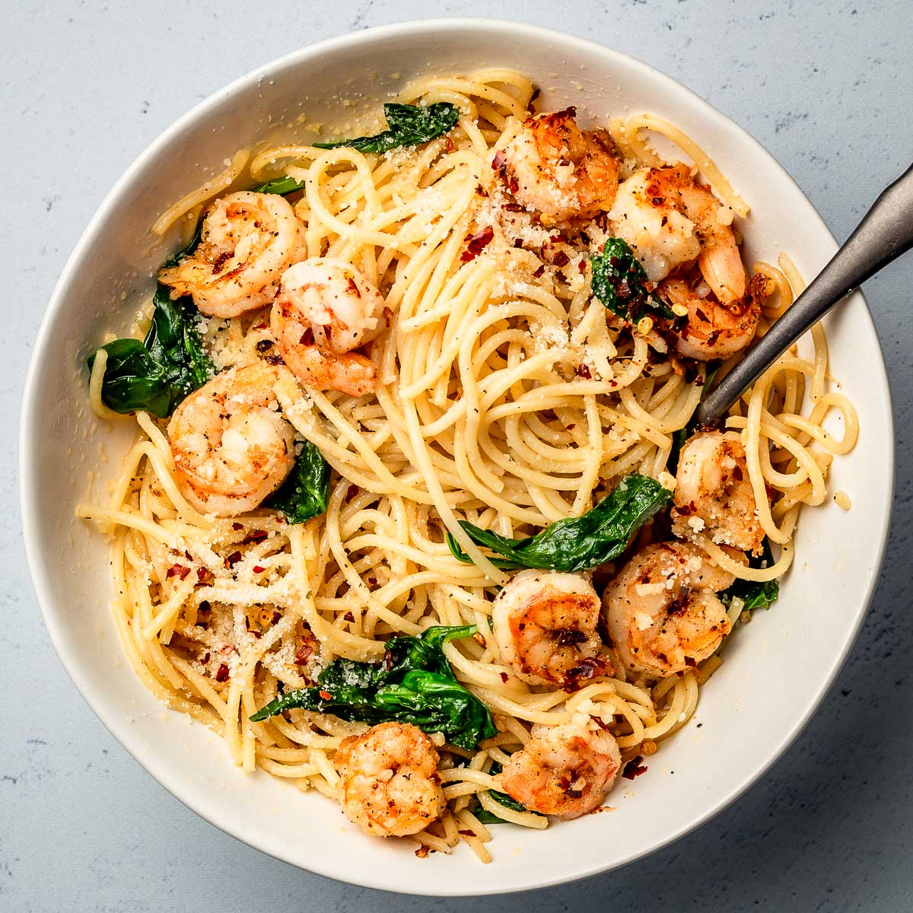

Garlic Shrimp Pasta

Description
Garlic shrimp pasta is a delightful dish featuring succulent shrimp sautéed in a garlic butter sauce, tossed with spaghetti and fresh parsley.
This dish is rich in flavor, easy to make, and perfect for a quick, satisfying meal.
Ingredients
- 300g spaghetti
- 200g shrimp, peeled and deveined
- 3 tbsp butter
- 3 cloves garlic, minced
- 1/2 cup chicken broth
- 1/2 cup cherry tomatoes, halved
- Salt and pepper, to taste
- Fresh parsley, chopped (for garnish)
- 1/4 cup grated Parmesan cheese (optional)
- Lemon wedges (optional)
Steps
- Cook the spaghetti according to package instructions until al dente. Drain and set aside.
- In a large pan, melt the butter over medium heat.
- Add the minced garlic and sauté until fragrant, about 1 minute.
- Add the shrimp and cook until pink and opaque, about 2-3 minutes per side.
- Add chicken broth and cherry tomatoes, then season with salt and pepper. Simmer for 2-3 minutes.
- Add the cooked spaghetti to the pan and toss everything together.
- Garnish with fresh parsley and Parmesan cheese if desired. Serve with lemon wedges for extra flavor.
- Enjoy your garlic shrimp pasta!